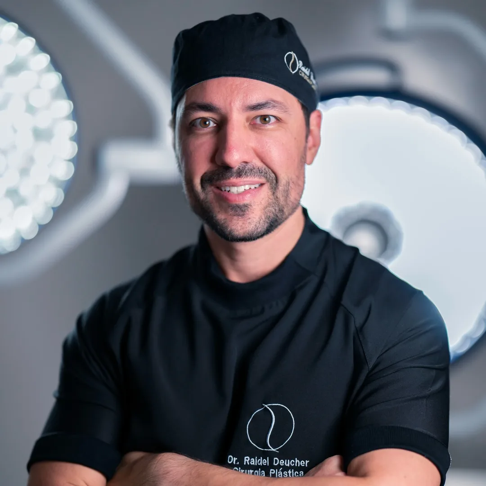
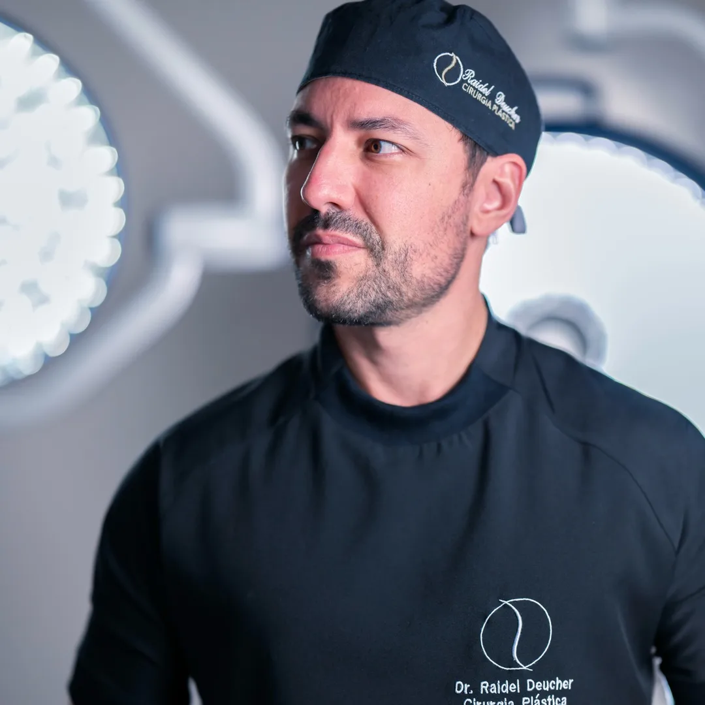
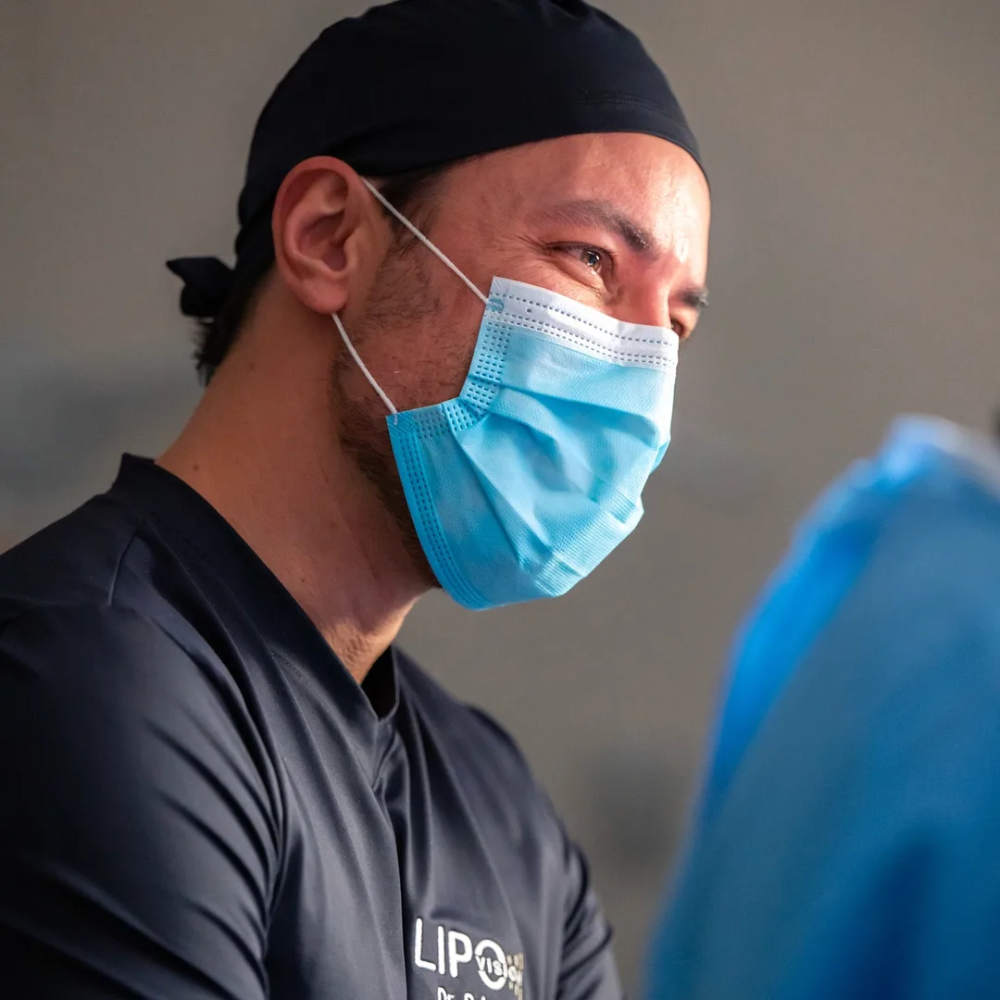

Cirurgia Plástica · Florianópolis
Cirurgia plástica com avaliação cuidadosa e conversa transparente.
Cada paciente é único. Por isso, tudo começa por uma consulta, na qual o Dr. Raidel ouve suas queixas, avalia seu caso e explica as opções adequadas, com seus benefícios e limites.
Dr. Raidel Deucher · MédicoCRM-SC 12514RQE 10935


Sobre o cirurgião
Medicina feita com escuta, critério e responsabilidade.
Dr. Raidel Deucher é médico e atua em cirurgia plástica em Florianópolis. Seu atendimento prioriza a avaliação individual: antes de qualquer indicação, vêm a conversa, o exame e o esclarecimento de dúvidas.
- ProfissionalDr. Raidel Deucher
- RegistroCRM-SC 12514
- Registro de especialistaRQE 10935
- AtendimentoFlorianópolis – SC
Procedimentos
Áreas de atuação
Minilipo
Lipoaspiração de áreas localizadas do corpo, indicada após avaliação individual. Na consulta, o Dr. Raidel analisa suas queixas, seu histórico e as características da região para definir se o procedimento é adequado e qual o melhor caminho.
MILA
Lipoabdominoplastia minimamente invasiva: técnica que combina lipoaspiração e tratamento da parede abdominal por abordagem menos extensa que a abdominoplastia tradicional. É indicada para casos selecionados, e só a avaliação médica define se faz sentido para você.
Cirurgia da mama
Avaliação para procedimentos estéticos da mama. A técnica e as opções dependem da anatomia, do histórico de saúde e dos objetivos de cada paciente, e são discutidas com clareza durante a consulta.
A indicação de qualquer procedimento depende de avaliação médica individual. Todo procedimento cirúrgico envolve riscos, e os resultados variam de pessoa para pessoa.
A consulta
Do primeiro contato à decisão, sem pressa.
Contato
Você chama pelo WhatsApp e a equipe informa os horários disponíveis e as orientações para o dia.
Avaliação
O médico escuta suas queixas e expectativas, conhece seu histórico de saúde e examina a região de interesse.
Orientação
Você recebe explicações sobre as opções adequadas ao seu caso, incluindo riscos e limites, e decide com tranquilidade.
Dúvidas frequentes
Perguntas comuns antes da consulta
Como é a primeira consulta?
É uma conversa com o médico para entender suas queixas e expectativas, avaliar seu histórico de saúde e realizar o exame físico. Ao final, ele explica as opções adequadas ao seu caso, incluindo benefícios, limitações e riscos.
Toda cirurgia plástica tem riscos?
Sim. Todo procedimento cirúrgico envolve riscos, que variam conforme o procedimento e as condições de saúde de cada pessoa. Eles são explicados em consulta, e o resultado nunca pode ser garantido.
Posso fazer qualquer procedimento que eu desejar?
Não. A indicação é sempre individual e depende de avaliação médica. Em alguns casos, a melhor orientação pode ser outra técnica, ou até não operar.
Como funciona a recuperação?
O tempo e os cuidados de recuperação variam de acordo com o procedimento e com cada paciente. As orientações de pré e pós-operatório são passadas pelo médico e pela equipe durante o acompanhamento.
Como agendo minha consulta?
Pelo WhatsApp. Basta tocar em qualquer botão do site para abrir uma conversa já com a mensagem pronta, e a equipe informa os horários e as condições de atendimento.
Localização e contato
Consultório em Florianópolis
⚠ Confirmar endereço e horários antes de publicar
Av. Osvaldo Rodrigues Cabral, 1570, sala 208Florianópolis – SC
CEP 88015-710
- WhatsApp(48) 99152-3765
- Instagram@dr.raidel
- HoráriosInformados no atendimento
Próximo passo
Agende uma avaliação e tire suas dúvidas com o médico.
A conversa é o ponto de partida. Toque no botão e a mensagem já abre pronta no seu WhatsApp.
